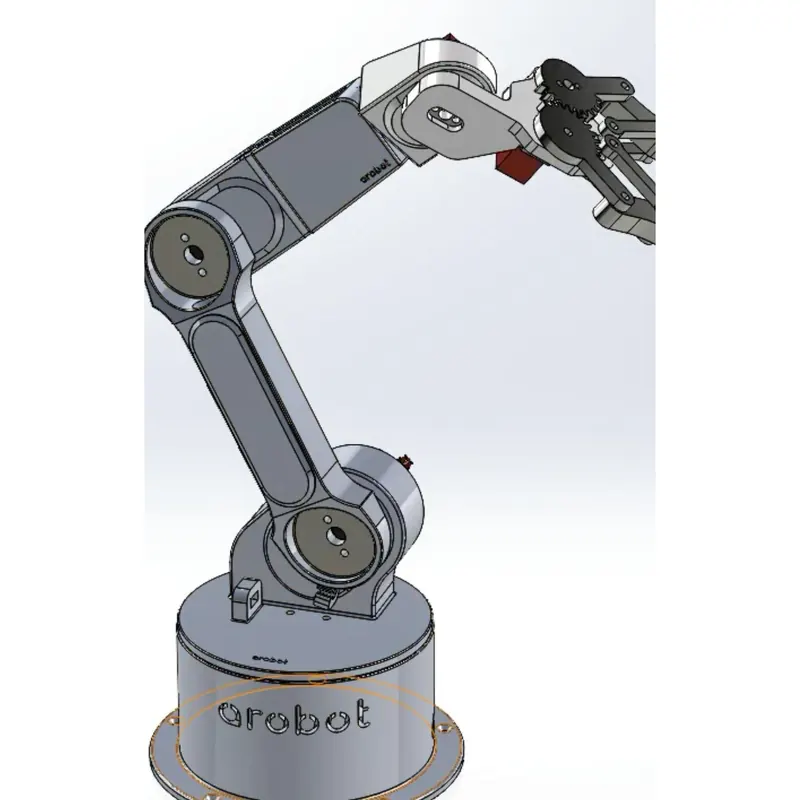

About me
From the factory floor to the packet capture

My story
I work with robotic systems in a high volume manufacturing environment. So that job taught me something most courses can't: when a system goes down, nobody cares how elegant your theory is. They care how fast you can get the fault, fix it, and write down what happened so it doesn't happen again.
That's what pulled me toward cybersecurity this production line and a network are the same kind of problem a lot of moving pieces, one weak spots, and a paper trail that tells you the truth if you know how to read it. I'm now pursuing a degree in Cybersecurity and Network Management at Weber State University.
I'm bilingual in English and Spanish, which has been more useful on the floor than any certification so far since being the person who can explain a lockout procedure in two languages matters. I'd like to keep that going in a security role, whether that's a SOC, a help desk that grows into one, or work on the law enforcement side of digital investigation.
Tools I've worked with
- Wireshark
- Nmap / Zenmap
- Cisco Packet Tracer
- Windows Server
- Ubuntu Linux
- VMware
- Bash
- Python
- Oracle SQL
- Git & GitHub
- HTML & CSS
The path so far
Now
Weber State University
Pursuing a degree in Cybersecurity and Network Management while working full time. Coursework across networking, security fundamentals, database systems, scripting, and web design.
Ongoing
Automation technician
Supporting automated robotic systems in high volume manufacturing diagnostics, uptime, and the documentation that keeps a line running across shifts.
Next
Security operations
Working toward an internship or entry level role where I can put lab work against real traffic, and continuing toward industry certification.